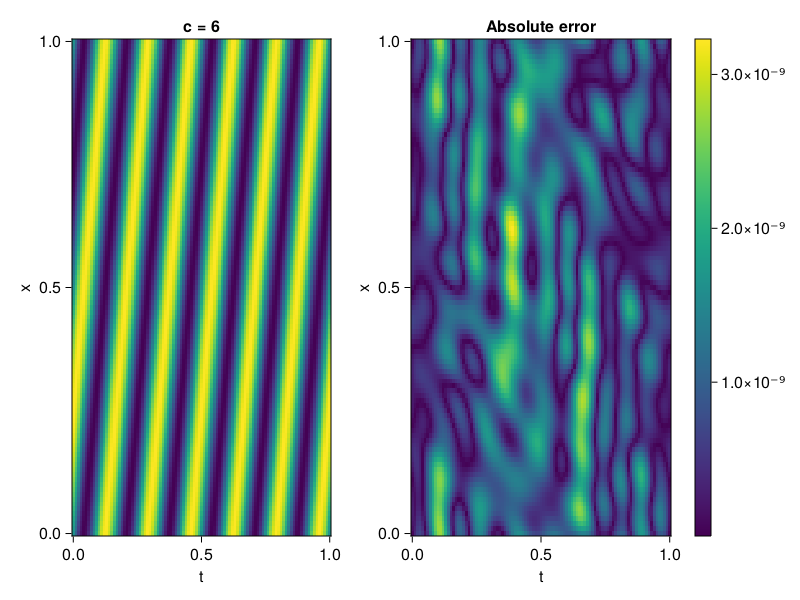

1D Convection Equation
Consider the following 1D-convection equation with periodic boundary conditions.
\[\begin{aligned} &\frac{\partial u}{\partial t}+c \frac{\partial u}{\partial x}=0, x \in[0,1], t \in[0,1] \\ &u(x, 0)=sin(2\pi x) \\ \end{aligned}\]
First we define the PDE.
using ModelingToolkit, Sophon, IntervalSets, CairoMakie
using Optimization, OptimizationOptimJL
@parameters x, t
@variables u(..)
Dₜ = Differential(t)
Dₓ = Differential(x)
c = 6
eq = Dₜ(u(x,t)) + c * Dₓ(u(x,t)) ~ 0
u_analytic(x,t) = sinpi(2*(x-c*t))
domains = [x ∈ 0..1, t ∈ 0..1]
bcs = [u(x,0) ~ u_analytic(x,0)]
@named convection = PDESystem(eq, bcs, domains, [x,t], [u(x,t)])\[ \begin{align} 6 \frac{\mathrm{d}}{\mathrm{d}x} u\left( x, t \right) + \frac{\mathrm{d}}{\mathrm{d}t} u\left( x, t \right) =& 0 \end{align} \]
Imposing periodic boundary conditions
We will use BACON to impose the boundary conditions. To this end, we simply set period to be one.
chain = BACON(2, 1, 8, 1; hidden_dims = 32, num_layers=4)MultiplicativeFilterNet(
filters = BranchLayer(
filter_1 = DiscreteFourierFeature(2 => 32), # 32 parameters, plus 64
filter_2 = DiscreteFourierFeature(2 => 32), # 32 parameters, plus 64
filter_3 = DiscreteFourierFeature(2 => 32), # 32 parameters, plus 64
filter_4 = DiscreteFourierFeature(2 => 32), # 32 parameters, plus 64
),
linear_layers = PairwiseFusion(
Base.Broadcast.BroadcastFunction{typeof(*)}(*)
layer_1 = Dense(32 => 32), # 1_056 parameters
layer_2 = Dense(32 => 32), # 1_056 parameters
layer_3 = Dense(32 => 32), # 1_056 parameters
),
output_layer = Dense(32 => 1), # 33 parameters
) # Total: 3_329 parameters,
# plus 256 states, summarysize 192 bytes.For demonstration purposes, the model is also periodic in time
sampler = QuasiRandomSampler(500, 100) # data points
strategy = NonAdaptiveTraining(1 , 500) # weights
pinn = PINN(chain)
prob = Sophon.discretize(convection, pinn, sampler, strategy)
@time res = Optimization.solve(prob, BFGS(); maxiters = 1000)u: ComponentVector{Float64}(filters = (filter_1 = (bias = [0.27171516048871985; 0.3796878956715064; … ; -0.7284658551967799; 0.4615229513595665;;]), filter_2 = (bias = [-0.3659942052052367; 0.9717942755968584; … ; -0.3031396455071848; 1.1525070512156812;;]), filter_3 = (bias = [0.1999905739965447; -0.2413945561614398; … ; -0.13320847792010068; -0.6926282801301171;;]), filter_4 = (bias = [0.5714527612060346; 0.7064402739108522; … ; 0.2989305890039815; 0.03477384188363849;;])), linear_layers = (layer_1 = (weight = [0.3611348643850572 -0.009199772700745025 … 0.19350206126503908 0.5115568630718919; 0.08767962148038473 -1.5977464654246236 … 0.09280310029887791 -0.27719801245753306; … ; -0.3365994743131919 0.1363077023448314 … 0.07401682417055885 -0.22844574748320998; 0.49832225469613567 -0.3545728009318779 … 0.1865967691188768 0.1591076530465922], bias = [0.11172668885471608; 0.04055646150787314; … ; -0.0018929228254373428; -0.008267107047302158;;]), layer_2 = (weight = [-0.021641559362261076 0.41074373071438114 … -0.42694538472087246 -0.46771454449960553; 0.20217315230047955 0.19014643516068136 … 0.004138054745932546 -0.4326220193187422; … ; -0.34771592155012154 -0.1411961386544278 … -0.29701730567091356 -0.04351959698938087; 0.43714617538820894 0.47423190143717864 … -0.142326346794816 -0.37305720251523106], bias = [-0.05303601873393417; -0.021556802559569082; … ; -0.17563332142596685; 5.0113954354449816e-5;;]), layer_3 = (weight = [0.021099093487050358 -0.0839408575833528 … 0.034921615212088135 0.31162010760951037; -0.06806312407304352 -0.236687688979201 … -0.2517000883234011 0.14436120112858478; … ; -0.08482347262374702 -0.3732347564827736 … 0.08320951433351617 0.32681057493667515; 0.3707316193962294 -0.004020619082554541 … 0.19254916116878804 -0.21658133454857362], bias = [-0.04787156781652864; -0.040613408161853486; … ; 0.03595560710771644; -0.01689306955655839;;])), output_layer = (weight = [0.13416866517325343 -0.055437431849919276 … 0.010253849041135221 -0.054092539468949964], bias = [0.005882887620347632;;]))Let's visualize the result.
phi = pinn.phi
xs, ts= [infimum(d.domain):0.01:supremum(d.domain) for d in domains]
u_pred = [sum(phi([x,t],res.u)) for x in xs, t in ts]
u_real = u_analytic.(xs,ts')
fig, ax, hm = heatmap(ts, xs, u_pred', axis=(xlabel="t", ylabel="x", title="c = $c"))
ax2, hm2 = heatmap(fig[1,end+1], ts,xs, abs.(u_pred' .- u_real'), axis = (xlabel="t", ylabel="x", title="Absolute error"))
Colorbar(fig[:, end+1], hm2)
display(fig)
We can verify that our model is indeed, periodic.
xs, ts= [infimum(d.domain):0.01:supremum(d.domain)*2 for d in domains]
u_pred = [sum(phi([x,t],res.u)) for x in xs, t in ts]
fig, ax, hm = heatmap(ts, xs, u_pred', axis=(xlabel="t", ylabel="x", title="c = $c"))
display(fig)